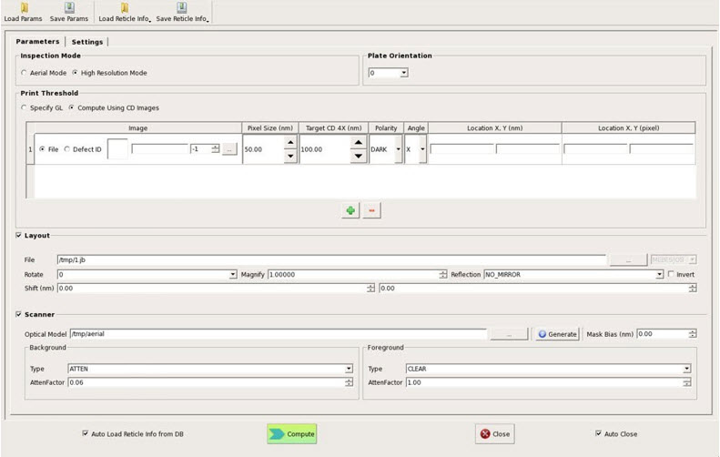
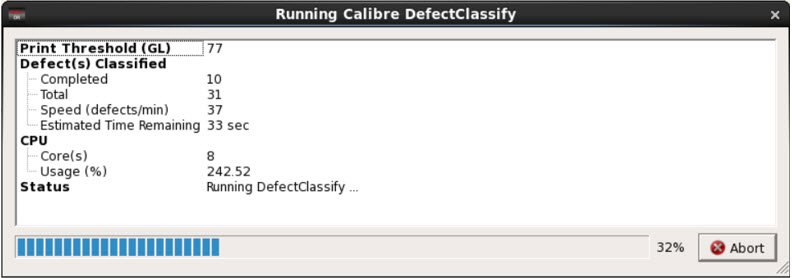

You invoke the Calibre DefectClassify Mask
Pattern Classification tool from the Utilities menu of
Calibre DefectReview.
Prerequisites
Calibre
DefectReview must be invoked.
A pattern inspection
file must be loaded into Calibre DefectReview. This can be done through
the Add Inspection(s) option in Calibre DefectReview.
Detailed instructions regarding this option can be found in the Calibre DefectReview User’s Manual.
Procedure
- To launch Calibre DefectClassify from Calibre
DefectReview, click Utilities > DefectClassify or
click the Calibre DefectClassify icon.
Figure 1. Calibre
DefectClassify Mask Pattern Classification Window
The following operations are available to manage defect classification:
All parameters
set or entered in the GUI can be saved to an XML file by clicking
the Save Params button. You can later load
the XML file using the Open Params button.
The Auto
Close check box closes the GUI when a run is completed,
otherwise the GUI remains open.
Reticle Information
Support — In addition to the parameters file, you can use reticle information
either from a Reticle Information File (RIF) or from a defect database
as input to a Calibre DefectClassify run. Click the Load
RIF Info button to load this information into the GUI.
Once the reticle information is loaded, you can edit and save changes
back to the RIF file or defect database.
The Auto Load Reticle Info from DB check
box automatically enables loading reticle information associated
with a defect file from the defect database. Calibre DefectClassify
assumes that the reticle information is already stored in the DB
and linked with the defect file.
Note: Not all reticle information is loaded into the GUI. Only
information relevant to Calibre DefectClassify is loaded.
- Click the Compute button
at the bottom of the Calibre DefectClassify window to start automatic
classification. A progress bar is displayed, showing the progress
in terms of number of defects processed.
Figure 2. Calibre
DefectClassify Progress Bar
Note: Upon launch, the Calibre DefectClassify window
is populated with previously-used settings and parameter values.
After each run, the Calibre DefectClassify window stays open to
facilitate launching the next run.